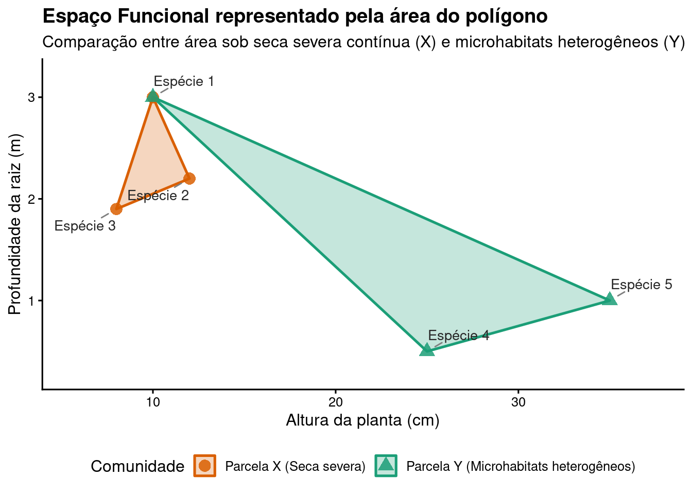

Prova treino de ecologia de comunidades
Exercício preparatório de aplicação e interpretação conceitual
1 Apresentação da prova treino
este exercício foi elaborado para ser resolvido em sala de aula com o acompanhamento do professor. o objetivo é consolidar o aprendizado dos módulos 1 a 5, integrando cálculos manuais simples (passíveis de execução com calculadora de celular), aplicação de conceitos e interpretação ecológica rigorosa.
A prova aborda cinco eixos fundamentais:
- descrição de comunidades e curvas de abundância relativa (sads/rads)
- índices clássicos de diversidade (\(\alpha\)) e equitabilidade
- números de hill e diversidade verdadeira (\(^qD\))
- partição espacial da biodiversidade (\(\alpha, \beta, \gamma\)) e dissimilaridade
- diversidade funcional, traços biológicos e regras de montagem
2 Bloco de questões para resolução em sala
2.1 Questão 1: Descrição de comunidades e curvas de abundância relativa (sads)
Em um estudo de bioindicação com insetos aquáticos em duas microbacias hidrográficas, foram amostrados 100 indivíduos em cada local, com uma riqueza total observada de 4 espécies. A distribuição das abundâncias observadas foi a seguinte:
| Espécie | Riacho preservado (Comunidade A) | Riacho alterado por efluente (Comunidade B) |
|---|---|---|
| Espécie 1 | 25 | 55 |
| Espécie 2 | 25 | 25 |
| Espécie 3 | 25 | 15 |
| Espécie 4 | 25 | 5 |
| Total de indivíduos | 100 | 100 |
Com base nesses dados:
- Calcule a abundância relativa de cada espécie em ambas as comunidades.
- Desenhe a curva de rank-abundância para as duas comunidades
- Explique por que a riqueza pura de espécies é incapaz de detectar o impacto da contaminação orgânica no riacho b.
2.2 Questão 2: Índices clássicos de diversidade e equitabilidade
Utilizando os dados das Comunidade A e B (riacho saudável e alterado) da questão 1, realize os cálculos solicitados a seguir.
- Calcule o índice de shannon-wiener (\(H' = - \sum p_i \ln(p_i)\)).
- Calcule a dominância de simpson ( \(D = \sum p_i^2\)), a diversidade de simpson (\(1 - D\)) e o inverso de simpson ( \(1/ D\)).
- Agora recalcule tudo, retiranto a espécie 1 de todas as amostras.
- Por que o índice de Simpson (\(1 - D\)) se comporta de maneira tão diferente do índice de Shannon (\(H' = - \sum p_i \ln(p_i)\)) quando eliminamos a “espécie 1”? O que essa diferença revela sobre a sensibilidade de cada índice?
2.3 Questão 3: Números de hill e diversidade verdadeira (\(^qD\))
Um ecólogo analisou os mesmos dados das microbacias acima usando os números Hill ou “diversidade verdadeira” e conseguiu fazer uma interpretação muito mais completa do que estava acontecendo com as comundades das bacias hidrográficas. Refaça seu caminho de cálculos e cria sua própria interpretação.
Converta os índices clássicos nas três primeiras ordens de diversidade verdadeira de hill (\(^qD\)) para ambas as florestas:
- q = 0 -> riqueza efetiva= \(^0D = S\))
- q = 1 -> espécies comuns: \(^1D = \exp(H')\))
- q = 2 -> espécies dominantes: \(^2D = 1 / D\))
interprete os resultados do Comunidade B: o que significa dizer que o local possui 4 espécies observadas (\(^0D = 4\)), mas um número menor de espécies efetivamente comuns (\(^1D\)) e outro ainda menor de espécies dominantes (\(^2D\))?
qual é a vantagem teórica de expressar a biodiversidade em “números de espécies efetivas” (números de hill) em vez de unidades abstratas de entropia ou probabilidade ao comunicar resultados para tomadores de decisão em conservação?
2.4 Questão 4: Partição da diversidade (\(\alpha, \beta, \gamma\)) e dissimilaridade
Agora, em uma amostragem de 3 lagoas de restinga (\(\text{lagoa 1}, \text{lagoa 2}, \text{lagoa 3}\)), os pesquisadores registraram a presença (1) ou ausência (0) de 5 espécies de peixes:
- lagoa 1: espécies a, b, c
- lagoa 2: espécies a, b, f
- lagoa 3: espécies d, e
Calcule a riqueza alfa média (\(\bar{\alpha}\)) e a riqueza gama regional (\(\gamma\), número total de espécies distintas registradas na paisagem).
Utilizando a partição multiplicativa de whittaker (\(\beta = \gamma / \bar{\alpha}\)), calcule a diversidade beta da paisagem e interprete o seu significado ecológico.
calcule o índice de similaridade de jaccard (\(Jac = \frac{a}{a + b + c}\)) entre:
- lagoa 1 e lagoa 2
- lagoa 1 e lagoa 3
Lembre-se que \(a\) é o número de espécies compartilhadas, \(b\) é o número de espécies exclusivas do primeiro local e \(c\) é o número de espécies exclusivas do segundo local.
- a diferença de composição entre a lagoa 1 e a lagoa 3 é fruto de substituição de espécies (turnover) ou de aninhamento (nestedness)? justificativa ecológica.
2.5 Questão 5: Diversidade funcional, traços e regras de montagem
Em uma região semiárida, duas parcelas de vegetação (parcela x e parcela y) possuem a mesma riqueza de plantas (3 espécies), mas diferem nos valores de traços funcionais de altura da planta (cm) e profundidade de enraizamento (m):
- parcela x (área sob seca severa contínua):
- espécie 1: altura = 10 cm, raiz = 3,0 m
- espécie 2: altura = 12 cm, raiz = 2,2 m
- espécie 3: altura = 8 cm, raiz = 1,9 m
- parcela y (área com microhabitats heterogêneos):
- espécie 1: altura = 15 cm, raiz = 2,0 m
- espécie 4: altura = 25 cm, raiz = 0,5 m
- espécie 5: altura = 35 cm, raiz = 1,0 m
- Observando a amplitude dos valores dos traços em cada parcela, qual delas apresenta a maior riqueza funcional (volume do envelope convexo ocupado no espaço de traços)? Faça um gráfico para representá-las, como este de abaixo:
Qual das parcelas indica a atuação de um filtro abiótico severo (gerando convergência funcional) e qual indica a atuação de limitação de similaridade / competição por recursos (gerando divergência funcional)?
se um gestor ambiental avaliasse apenas a riqueza taxonômica (3 espécies), por que ele cometeria um erro ao assumir que a parcela x e a parcela y possuem a mesma vulnerabilidade a mudanças climáticas?
3 Gabarito Comentado
NoteClique aqui para visualizar o Gabarito Comentado
3.1 Questão 1: Descrição de comunidades e curvas de abundância relativa (SADs)
a) Abundância relativa (\(p_i = n_i / N\)):
Como \(N = 100\) em ambas as comunidades:
| Espécie | Comunidade A (\(p_i\)) | Comunidade B (\(p_i\)) |
|---|---|---|
| Espécie 1 | \(0,25\) (\(25\%\)) | \(0,55\) (\(55\%\)) |
| Espécie 2 | \(0,25\) (\(25\%\)) | \(0,25\) (\(25\%\)) |
| Espécie 3 | \(0,25\) (\(25\%\)) | \(0,15\) (\(15\%\)) |
| Espécie 4 | \(0,25\) (\(25\%\)) | \(0,05\) (\(5\%\)) |
b) Curva de rank-abundância (Whittaker): * Comunidade A: Forma uma linha perfeitamente horizontal (inclinação zero) no patamar de \(p_i = 0,25\) do rank 1 ao 4, refletindo equitabilidade máxima. * Comunidade B: Apresenta uma curva íngreme e decrescente, partindo de \(0,55\) (rank 1) e caindo até \(0,05\) (rank 4), refletindo forte dominância e baixa equitabilidade.
c) Limitação da riqueza pura de espécies: A riqueza (\(S = 4\)) atribui exatamente o mesmo peso a uma espécie representada por \(55\) indivíduos e a uma espécie representada por apenas \(5\) indivíduos. Como nenhuma espécie foi localmente extinta ainda na Comunidade B, a riqueza não detecta a reorganização drástica das abundâncias (perda de espécies sensíveis e explosão populacional de espécies oportunistas/tolerantes ao efluente orgânico).
3.2 Questão 2: Índices clássicos de diversidade e equitabilidade
a) Índice de Shannon-Wiener (\(H' = -\sum p_i \ln p_i\)): * Comunidade A: \[H'_A = -4 \times (0,25 \times \ln 0,25) = -(-1,386) = \mathbf{1,386}\] * Comunidade B: \[H'_B = -[0,55\ln(0,55) + 0,25\ln(0,25) + 0,15\ln(0,15) + 0,05\ln(0,05)]\] \[H'_B = -[-0,3288 - 0,3466 - 0,2846 - 0,1498] = \mathbf{1,110}\]
b) Índices de Simpson (\(D\), \(1-D\) e \(1/D\)): * Comunidade A: * Dominância: \(D_A = 0,25^2 + 0,25^2 + 0,25^2 + 0,25^2 = \mathbf{0,250}\) * Diversidade de Simpson: \(1 - D_A = 1 - 0,250 = \mathbf{0,750}\) * Inverso de Simpson: \(1 / D_A = 1 / 0,250 = \mathbf{4,00}\) * Comunidade B: * Dominância: \(D_B = 0,55^2 + 0,25^2 + 0,15^2 + 0,05^2 = 0,3025 + 0,0625 + 0,0225 + 0,0025 = \mathbf{0,390}\) * Diversidade de Simpson: \(1 - D_B = 1 - 0,390 = \mathbf{0,610}\) * Inverso de Simpson: \(1 / D_B = 1 / 0,390 \approx \mathbf{2,56}\)
c) Recálculo removendo a Espécie 1 (recalculando \(p_i\) sobre o novo total):
- Comunidade A sem Espécie 1 (\(N = 75\); \(p_2 = p_3 = p_4 = 25/75 = 0,333\)):
- \(H' = -3 \times (0,333 \times \ln 0,333) = \mathbf{1,099}\)
- \(D = 3 \times (0,333^2) = \mathbf{0,333}\)
- \(1 - D = \mathbf{0,667}\)
- \(1 / D = \mathbf{3,00}\)
- Comunidade B sem Espécie 1 (\(N = 45\); \(p_2 = 25/45 = 0,556\), \(p_3 = 15/45 = 0,333\), \(p_4 = 5/45 = 0,111\)):
- \(H' = -[0,556\ln(0,556) + 0,333\ln(0,333) + 0,111\ln(0,111)] = \mathbf{0,937}\)
- \(D = 0,556^2 + 0,333^2 + 0,111^2 = 0,3086 + 0,1111 + 0,0123 = \mathbf{0,432}\)
- \(1 - D = 1 - 0,432 = \mathbf{0,568}\)
- \(1 / D = 1 / 0,432 \approx \mathbf{2,31}\)
d) Diferença de comportamento e sensibilidade entre Shannon (\(H'\)) e Simpson (\(1 - D\)): Na Comunidade B, a remoção da Espécie 1 (que representava \(55\%\) da amostra) provocou uma queda proporcionalmente maior em \(H'\) (de \(1,110\) para \(0,937\), queda de \(15,6\%\)) do que em \(1 - D\) (de \(0,610\) para \(0,568\), queda de \(6,9\%\)). Isso ocorre porque Simpson (\(1 - D\)) é fortemente ponderado pelas espécies dominantes (devido ao termo quadrático \(p_i^2\)): ao remover a antiga dominante, a Espécie 2 assume imediatamente o papel de nova dominante (\(p_2 = 0,556\)), mantendo o valor de \(D\) elevado e amortecendo a variação de \(1 - D\). Já Shannon (\(H'\)) pondera cada espécie proporcionalmente à sua abundância e é mais sensível à perda de riqueza e às espécies de abundância intermediária/rara.
3.3 Questão 3: Números de Hill e diversidade verdadeira (\(^qD\))
a) Conversão para números de Hill (\(^qD\)):
| Ordem (\(q\)) | Comunidade A (Preservada) | Comunidade B (Alterada) |
|---|---|---|
| \(q = 0\) (\(^0D = S\)) | \(4,00\) | \(4,00\) |
| \(q = 1\) (\(^1D = e^{H'}\)) | \(e^{1,386} = \mathbf{4,00}\) | \(e^{1,110} \approx \mathbf{3,03}\) |
| \(q = 2\) (\(^2D = 1/D\)) | \(4,00\) | \(2,56\) |
b) Interpretação ecológica da Comunidade B: Embora o riacho alterado ainda abrigue \(4\) espécies (\(^0D = 4\)), a distribuição desigual de abundâncias faz com que ele apresente a diversidade equivalente a uma comunidade ideal com apenas \(\approx 3\) espécies igualmente abundantes considerando espécies típicas (\(^1D \approx 3,03\)), e apenas \(\approx 2,6\) espécies quando o foco recai sobre as espécies dominantes (\(^2D \approx 2,56\)). Isso mostra perda efetiva de diversidade funcional/estrutural mesmo sem extinção local.
c) Vantagem na comunicação para tomadores de decisão: Índices clássicos como \(H'\) (medido em nats ou bits de informação) ou \(1-D\) (probabilidade de encontro interespecífico) não são lineares: dobrar a diversidade de uma comunidade não dobra o valor de \(H'\) nem de \(1-D\). Os números de Hill expressam a biodiversidade na mesma unidade intuitiva da riqueza (número efetivo de espécies) e obedecem ao princípio da duplicação (se duas comunidades igualmente diversas e sem espécies em comum são unidas, a diversidade resultante dobra), facilitando comparações diretas de perda ou ganho de biodiversidade em políticas públicas.
3.4 Questão 4: Partição da diversidade (\(\alpha, \beta, \gamma\)) e dissimilaridade
a) Riqueza alfa média (\(\bar{\alpha}\)) e gama (\(\gamma\)): * Riquezas locais: \(\alpha_1 = 3\) (\(\{a, b, c\}\)), \(\alpha_2 = 3\) (\(\{a, b, f\}\)), \(\alpha_3 = 2\) (\(\{d, e\}\)). * Alfa média: \(\bar{\alpha} = \frac{3 + 3 + 2}{3} = \frac{8}{3} \approx \mathbf{2,67\text{ espécies}}\) * Gama regional: \(\gamma = |\{a, b, c, d, e, f\}| = \mathbf{6\text{ espécies}}\)
b) Partição multiplicativa de Whittaker (\(\beta = \gamma / \bar{\alpha}\)): \[\beta = \frac{6}{2,67} = \mathbf{2,25}\] Interpretação: A paisagem regional possui \(2,25\) vezes mais espécies do que a média de uma lagoa individual (equivalente a dizer que há aproximadamente \(2,25\) comunidades composicionalmente distintas no conjunto das \(3\) lagoas).
c) Similaridade de Jaccard (\(Jac = \frac{a}{a + b + c}\)): * Lagoa 1 vs. Lagoa 2: compartilhadas \(a = 2\) (\(\{a, b\}\)), exclusivas da Lagoa 1 \(b = 1\) (\(\{c\}\)), exclusivas da Lagoa 2 \(c = 1\) (\(\{f\}\)). \[Jac_{1,2} = \frac{2}{2 + 1 + 1} = \frac{2}{4} = \mathbf{0,50}\text{ (ou }50\%\text{)}\] * Lagoa 1 vs. Lagoa 3: compartilhadas \(a = 0\), exclusivas da Lagoa 1 \(b = 3\) (\(\{a, b, c\}\)), exclusivas da Lagoa 3 \(c = 2\) (\(\{d, e\}\)). \[Jac_{1,3} = \frac{0}{0 + 3 + 2} = \mathbf{0,00}\text{ (ou }0\%\text{)}\]
d) Substituição (turnover) vs. Aninhamento (nestedness): A diferença entre a Lagoa 1 (\(\{a, b, c\}\)) e a Lagoa 3 (\(\{d, e\}\)) é 100% fruto de substituição de espécies (turnover), pois nenhuma espécie é compartilhada entre elas (a Lagoa 3 não é um subconjunto empobrecido da Lagoa 1, mas sim composta por espécies totalmente diferentes). Ecologicamente, isso indica forte filtragem ambiental diferencial entre lagoas (ex.: gradientes de salinidade, profundidade ou conectividade) ou barreiras à dispersão que favorecem conjuntos distintos de espécies em cada corpo d’água.
3.5 Questão 5: Diversidade funcional, traços e regras de montagem
a) Maior riqueza funcional (volume/área do envelope convexo): A Parcela Y (microhabitats heterogêneos) apresenta maior riqueza funcional, pois suas espécies ocupam uma amplitude muito maior tanto em altura (\(15\) a \(35\text{ cm}\), ou \(10\) a \(35\text{ cm}\) no gráfico) quanto em profundidade de raiz (\(0,5\) a \(2,0\text{ m}\)), formando um polígono convexo de área muito superior ao da Parcela X (onde todas as espécies ficam restritas a \(8\text{--}12\text{ cm}\) de altura e \(1,9\text{--}3,0\text{ m}\) de raiz).
b) Regras de montagem ecológica: * Filtro abiótico severo (convergência funcional): Parcela X. A seca severa contínua seleciona apenas espécies capazes de tolerar o estresse hídrico extremo — plantas de porte baixo (menor perda transpiratória) e raízes muito profundas (acesso ao lençol freático), fazendo com que os traços converjam para um único ótimo adaptativo. * Limitação de similaridade / diferenciação de nicho (divergência funcional): Parcela Y. A heterogeneidade de microhabitats e a competição por água e luz favorecem espécies com estratégias contrastantes (raízes superficiais vs. profundas; portes variados), reduzindo a sobreposição de nicho e promovendo divergência funcional.
c) Vulnerabilidade às mudanças climáticas e limitação da riqueza taxonômica: Embora ambas possuam \(3\) espécies, a Parcela X apresenta baixíssima diversidade e redundância de estratégias funcionais: todas as suas espécies dependem do mesmo síndrome adaptativo (enraizamento profundo). Caso uma mudança climática altere o regime hidrológico de modo a rebaixar drasticamente o lençol freático ou favorecer eventos de chuvas curtas e superficiais, todas as espécies da Parcela X podem colapsar simultaneamente. Já a Parcela Y, por abrigar estratégias múltiplas (exploração de camadas superficiais e profundas do solo), possui maior efeito seguro (insurance effect) e resiliência ecossistêmica.